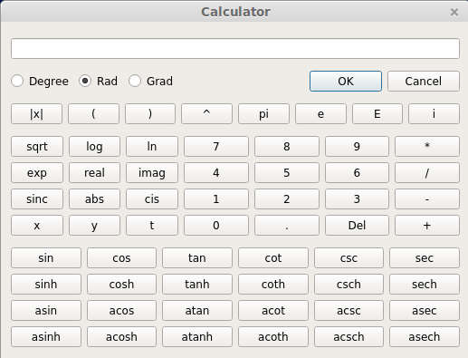
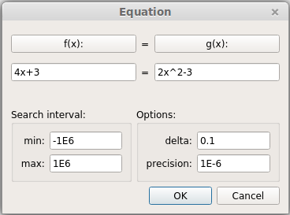
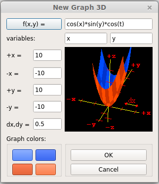
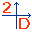
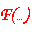
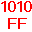

“Matemática Grafica” - Manual Simples e Rápido
Matemática Gráfica é um software de matemática muito simples e poderoso. O objectivo é ser tão simples que permita o seu uso imediato, praticamente sem que o utilizador tenha que ler o manual de instrução : ) e que permita uma grande flexibilidade e poder para executar cálculos mais sofisticados de maneira muito simples.
Algumas caracteristicas do Matemática Gráfica: calculadora com números reais e imaginários, funções trogonométricas, gráficos 2D /3D, integrais simples e duplos e sistema de equações.
Se
o utilizador é
preguiçoso e gosta de user o rato, basta clicar no icon da calculadora
e uma calculadora cientifica aparece. Basta clicar nos botões para
fazer os cálculos que desejar, e para escolher os operadores e funções
disponíveis.


O botão "Calculadora" em baixo à esquerda é semelhante ao icon "Calculadora" do menu, a diferença é que não efetua o cálculo imediatamente, apenas mostra a expressão na linha de comandos. O utilizador deve clicar "Enter" na linha de comandos, ou premir o botão "Ok" em baixo à direita para efetuar o cálculo.
O Matemática Gráfica guarda uma lista de todos os cálculos. Basta clicar em cima de qualquer um para ele aparecer na linha de comandos, ou fazer um duplo click para abrir novamente a janela da calculadora científica.
Pode navegar pela linha de comandos e a lista dos cálculos com o teclado, teclas das setas Up e Down.
Quando escrevemos um número com casas decimais devemos usar o ponto '.' (por exemplo 3.2 está correcto). Não devemos user a vírgula ',' ( 3,2 está errado).
|
Constantes |
|
|
pi |
número Pi, 3.1415... |
|
e |
número de Nepper 2.71... (não usar 'E' ) |
|
i |
número imaginário, usar a notação ( 2+3.2i ) não usar ( 2+i3.2 ) |
|
Operadores |
|
|
+ |
soma |
|
- |
subtração |
|
* |
multiplicação |
|
/ |
divisão |
|
^ |
potência |
|
| |
módulo ou valor absoluto, por exe. |-10| = 10 (este não é um operador de lógica) |
|
E |
equivalente a *10^, por ex. 3E2 = 3*10^2 = 300 (não usar 'e' , 'e' é o número de Nepper) |
|
Funções trigonométricas |
|
|
sin, cos, tan, cotg, csc, sec |
trigonométricas |
|
asin, acos, atan, acotg, acsc, asec |
trigonométricas inversas |
|
sinh, cosh, tanh, cotgh, csch, sech |
hyperbólicas |
|
asinh, acosh, atanh, acotgh, acsch, asech |
hyperbólicas inversas |
|
Outras funções |
|
|
sqrt |
raíz quadrada (Square root) |
|
log |
logaritmo natural base 10 |
|
ln |
logaritmo exponencial base e |
|
exp |
Exponencial, equivalente a e^ |
|
sinc |
função Sinc, sinc(x) = sin(pi*x)/(pi*x) |
| real | parte real de um número complexo, ex. real(3-2i) = 3 |
| imag | parte imaginária de um número complexo, ex. imag (3-2i) = -2i |
| abs |
equivalente à função módulo ou valor absoluto, ex. abs(-10) = 10 |
Todas as funções são 'case insensitive', podemos escrever cos(3) or Cos(3), excepto para o 'e', o número de Nepper, que é diferente do operador 'E'.

De forma simples, basta clicar no botão e aparece a janela das equações.

Basta escrever qualquer equação nas linhas de texto f(x) e g(x).
Podemos também usar outra variável diferente do 'x', opr exemplo o 'y', ou 'minhavariavel1', o programa Matemática Gráfica reconhece automaticamente a variável. Os valores 'min' e 'max' são o intervalo de procura, 'step' é o incremento e 'precision' define a precisão que queremos obter para o resultado. Os valores que aparecem por defeito são adequados para a maioria das situações.
A solução:

O programa cria automaticamente a variável 'x' e, neste caso de solução múltipla, atribui o último valor (x=6.70156 neste exemplo) à variável 'x'. Veremos mais à frente mais sobre a criação de variáveis.
Também se clicarmos duplamente na linha da equação, na lista da janela principal, aparece a janela das equações. Se clicarmos duplamente nas linhas dos resultados, aparece a janela da calculadora científica.
Não deverão ser usadas expressões do tipo:
x=x+1
Esta expressão é correcta do ponto de vista de linguagem de programação, onde o sinal '=' é o operador de atribuição. 'x' seria incrementado uma unidade. Mas dum ponto de vista matemático, é uma equação sem solução.
Se usarmos este tipo de expressões, o Matemática gráfica não encontrará solução. O programa usa um algoritmo de pesquisa muito rápido, mas experimental, que se torna muito lento com expressões deste tipo, em que 'x' e 'x+1' são linhas paralelas. O utilizador se calhar já reparou que o Matemática Gráfica resolveu a equação do exemplo anterior 'x^2-4x=3x-2' muito rapidamente, pesquisando num intervalo de 120.000.000 ( -1E6 a 1E6 com incrementos de 0.1).


Repare que podemos usar expressões como 'pi/2' e '-e' nos limites de integração. Também se não nos lembrarmos de todas os funçõ
es disponíveis, basta clicar no botão f(x) e aparece a janela da calculadora científica, onde podemos compor a nossa expressão a integrar (no exemplo da imagem seria cos(x) ). 'm' é o factor de qualidade, quanto maior melhor a precisão do cálculo, mas mais lento se torna. Na verdade 'm' é o número de inervalos do método de integração númerica Simpson composto.


Repare também que podemos usar expressões como 'x^2+3x' e 'x' nos limtes do integral interior. Isto é muito útil. Novamente, podemos também clicar no botão f(x,y) para chamar a janela da calculadora cientifica para nos ajudar a escrever a expresão a integrar.

Mais uma vez, poderiamos ter introduzido a nossa integração directamente na linha de comandos.


Como já deve ter reparado, todas as janelas aparecem com valores pré definidos nas linhas de texto, de forma a que o utilizador se sinta mais confortável com o programa, à primeira vez que o utiliza. Portanto vamos usar a função "cos(x)*sin(y)" e aparecerá o gráfico da seguinte figura.

Aparece um gráfico com um menu à esquerda, onde podemos:
- criar um gráfico novo
- definir o modo de rotação automática, o grafico roda quando clicamos com o botão esquerdo e arrastamos, a rotação termina imediatamente quando paramos de clicar, ou então continua a rodar, desvanecendo lentamente até parar

Podemos fazer o zoom com a rodinha do rato ou com as teclas '+' e '-'. Para fazer a rotação do gráfico basta clicar e arrastar, então aparece um bonito efeito de animação com o gráfico a rodar, que eventualmente acabará por parar. Para parar a rotação gráfica imediatamente, basta clicar e libertar o botão do rato, sem o deslizar. Também podemos fazer a rotação com as teclas das setas Esquerda, direita, Cima, Baixo, '8' e '9' (respectivamente rotação no eixo x, y, e, z).
A próxima imagem mostra a janela com dois gráficos em movimento.


A forma para desenhar este gráfico é similar à do gráfico 3D, basta clicar no referido botão e definir as expressões do tipo: x=f1(t); y=f2(t); z=f3(t), como é mostrado no exemplo a seguir:

Aparece o gráfico correspondente:



O gráfico "12*cos(x-t)" :

Podemos ir adicionando gráficos à janela, o número máximo depende da memória do sistema.
A imagem seguinte mostra vários gráficos:

Para criar um gráfico numa janela nova clicamos no programa principal do 'Matematica Gráfica' no icon 'Grafico 2D'.

Clicamos no botão e aparece a janela dos sistemas de equações. Basta escolher o número de equações que queremos calcular, introduzirmos os valores, ou se quisermos geramos os valore aleatoriamente com o botão 'Random'. Então clicamos em 'Solve' e aparece a solução.

Esta ferramenta é muito poderosa, repare que podemos usar números complexos e até expressões matemáticas no sistema de equções.
Podemos usar a linha de comandos para criar variáveis. Basta escrever, por exemplo, 'y=3.2' e criamos uma variável chamada y com o valor 3.2. Agora podemos definir uma variável z = y+3 e temos uma variável z com o valor 6.2.
Também podemos escrever expressões do tipo 'z+2*y' qu e o Matemática Gráfica resolve e mostra o resultado.
Também podemos usar nomes para as variáveis do tipo 'minhavar2', 'xx_3'. O nome da variável deve começar sempre com uma letra, e conter letras, caracter underscore "_" e números.

Se fecharmos o Matemática Gráfica e abrirmos novamente o programa, as variáveis e os seus valores serão guardados, assim podemos usá-los novamente.



Esta é uma ferramenta muito poderosa. Podemos definir qualquer tipo de formulas. Por defeito, aparece uma formula pré definida, mas podemos adicionar muitas mais, clicando no botão 'New'. também podemos usar o menu de contaxto para adicionar formulas, este menu aparece quando clicamos com o obotão direito do rato na área das formulas.

Para selecionar uma formula, basta clicar em cima e depois clicar no botão 'Validar' ('Validate').
A lista de constantes é automaticamente preenchida, com as variaveis da fórmula (neste exemplo o 'a', 'x', 'b' e 'c'). Em vez de clicar no botão 'Validate' podemos também fazer um duplo click em cima da fórmula. O duplo click funciona como atalho ao botão 'Validate'.
Neste exemplo definimos a fórmula resolvente. Queremos saber o valor de 'x' e atribuir valores às constantes 'a', 'b' e 'c'. Devemos sempre atribuir o carater '?' à variável que queremos calcular.
Agora clicamos no botão 'Resolver' ('Solve') e aparece a solução.
A última fórmula, na linha 4, serve como exemplo para calcular a média das notas de 3 alunos chamados mary, john e william. Serve apenas para mostrar a versatilidade do Matematica Gráfica, que permite usar nomes próprios para definir variáveis.
Repare também na fórmula nº2, 'En=m*C^2' define a Lei de Newton. Repare que usamos a variavel 'En' em vez de 'E'. Isto porque a letra 'E' é um operador definido pelo Matematica Grafica, portanto não pode ser usado como variável.
Os campos 'min' e 'max' definem a gama de valores de procura de soluções. O campo 'incremento' ('step') define o incremento do intervalo de procura de soluções, e o campo 'precisão' ('precision') define a precisão que iremos obter na solução da fórmula. Podemos alterar estes valores, se pecisarmos, mas em principio servem para a maioria das situações.
Todas as fórmulas e valores das variáveis são guardadas entre sessões do programa.
